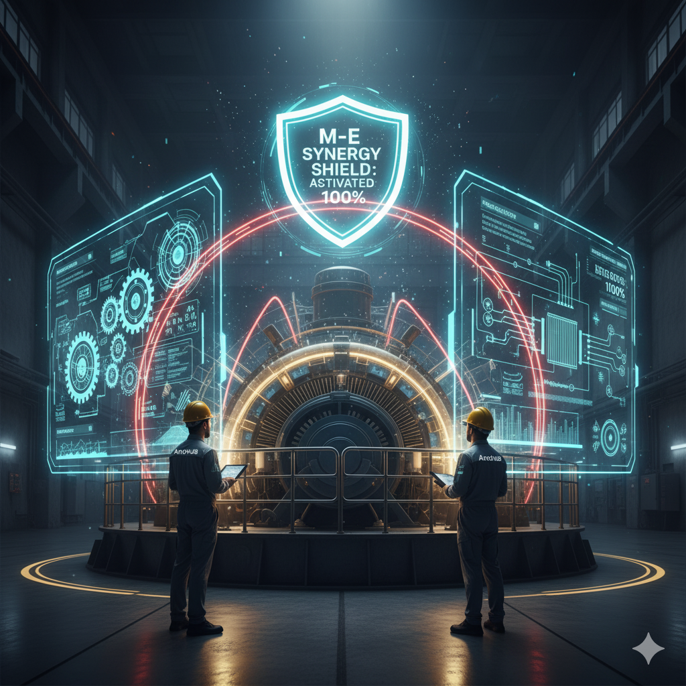

Modern hydropower plants are intricate symphonies of mechanical power and electrical control. Yet, traditional maintenance often treats these two domains in isolation. This siloed approach creates a dangerous synergy gap, where seemingly minor electrical instabilities accelerate mechanical wear, leading to costly, unpredictable failures. This article reveals why a Holistic M-E Synergy Audit is not just an option, but a critical investment for long-term asset integrity.
1. The Hidden Interconnections: How Electrical Flaws Become Mechanical Killers
We have seen how electrical issues accelerate mechanical wear. This section elaborates on the critical connections:
- Grounding and Stray Currents: Improper grounding redirects fault currents through unexpected paths, silently causing electro-erosion and destroying critical bearings.
- Voltage and Frequency Instability: Fluctuations impact motor windings and hydraulic control systems, leading to mechanical stress and intensified vibrations.
- Protection System Gaps: When protective relays fail to react quickly, the mechanical system absorbs the resulting shock, accelerating component fatigue.
The Synergy Gap is where one system's flaw can trigger catastrophic failure in the other. A true root cause (electrical) is missed because only the symptom (bearing failure) is addressed.
2. The Holistic M-E Synergy Audit: Your Blueprint for Immunity
Our holistic audit treats your plant as a single, interdependent system, guaranteeing complete operational oversight. Key audit components include:
Advanced Electrical Diagnostics:
- Thermal Imaging (Thermography): Detecting overheating in electrical connections before they cause power fluctuations.
- Insulation Resistance Testing: Verifying the integrity of motor and generator windings to prevent electrical breakdowns.
- Power Quality Analysis: Identifying voltage sags, swells, and harmonics that stress mechanical drives.
Integrated Mechanical Analysis:
- Vibration Analysis (Correlated): Linking specific vibration patterns to potential electrical causes or exacerbated mechanical issues.
- Bearing Health Monitoring: Specifically looking for signs of electro-erosion alongside typical wear.
- Control System Review: Auditing SCADA/PLC logic to ensure it optimizes mechanical operation and prevents harmful operating modes.
3. Beyond the Audit: A Proactive Future
An M-E Synergy Audit provides a comprehensive blueprint to transform your maintenance strategy, securing your asset's longevity and performance:
- Risk Mitigation: Eliminating "ticking time bombs" from hidden electro-mechanical interactions.
- Optimized Uptime: Reducing unplanned outages and extending component lifespan.
- Cost Savings: Avoiding costly emergency repairs and ensuring efficient resource allocation.
Fortify Your Plant
Ready to fortify your hydropower plant against hidden electro-mechanical threats?
LAUNCH SYNERGY PROTOCOL